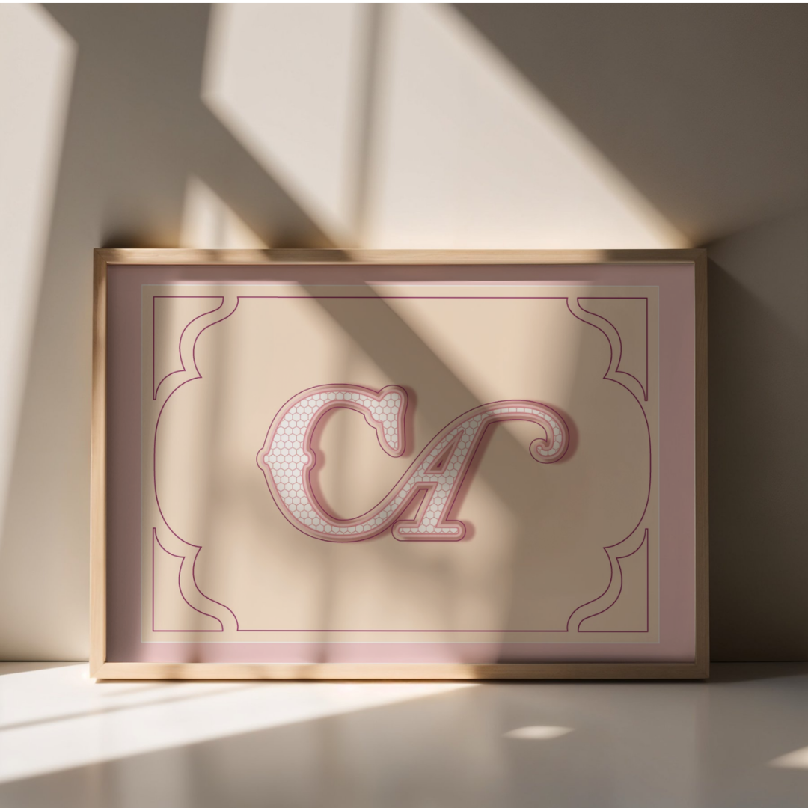
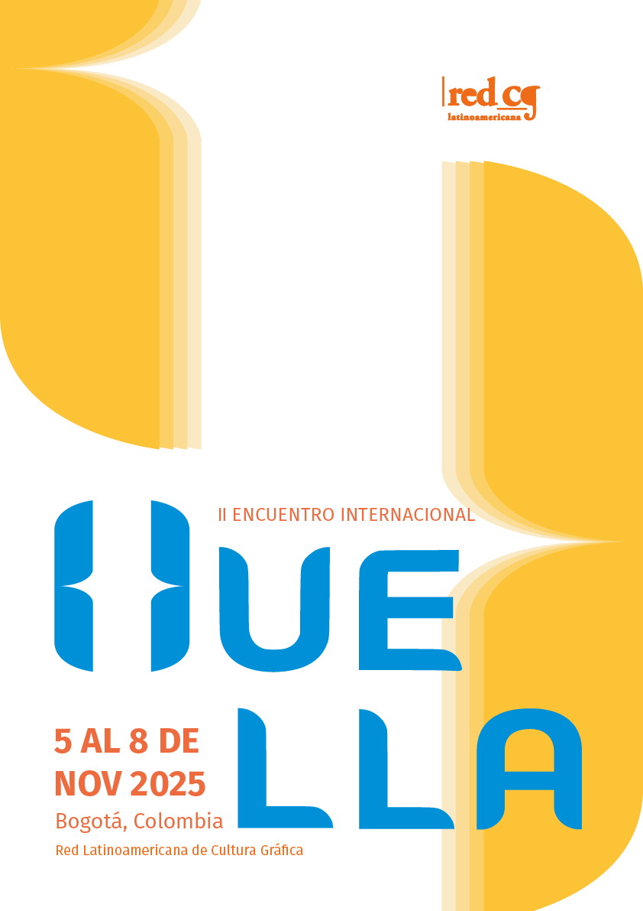
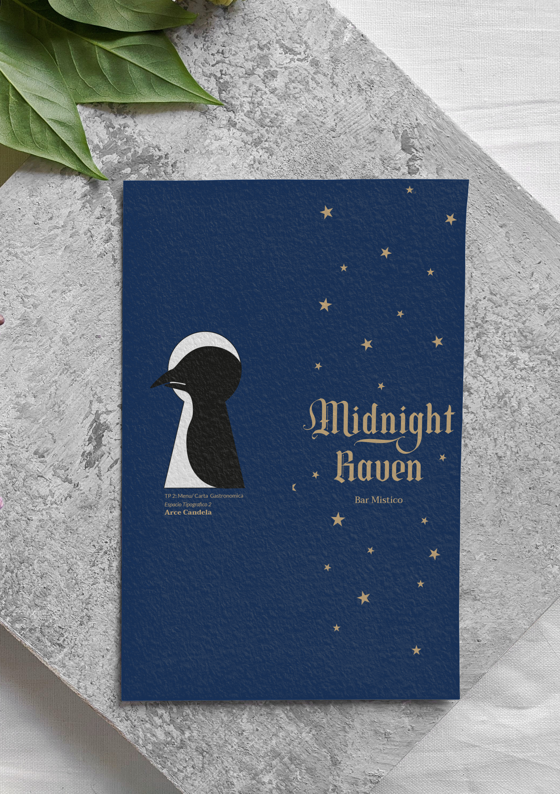
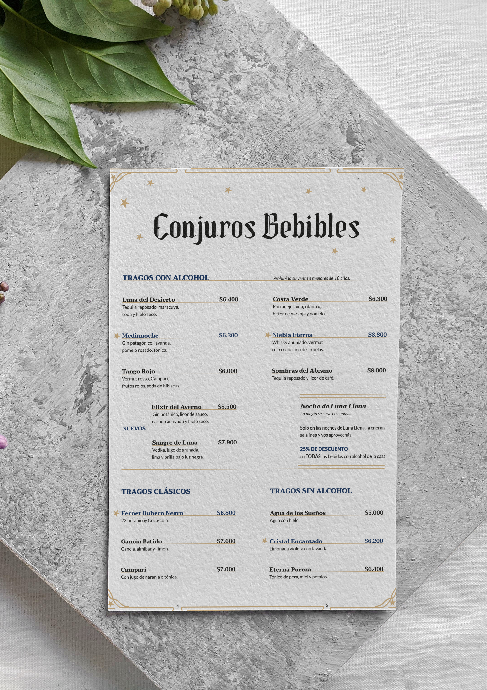

Estudiante universitaria de Diseño y Comunicación Visual, actualmente cursando el tercer año de la carrera. Me caracterizo por ser una persona responsable, organizada y comprometida, con buena capacidad para trabajar en equipo. Busco incorporarme a una organización donde pueda aportar dedicación y buena predisposición.

Formación Académica
Universidad Nacional de Lanús
Año de inicio: 2024 | Actualidad
Colegio Armenio Jrimian
Título Secundario en Ciencias Sociales
Año de egreso: 2022
Experiencia Laboral
Cyber OK | Abril-2023
- Atención y asistencia a clientes.
- Cobro y manejo básico de caja.
- Asistencia en el uso de computadoras e impresión.
- Mantenimiento y organización del espacio de trabajo.
Habilidades personales
- Atención al cliente
- Trabajo en equipo
- Organización y responsabilidad
- Manejo de herramientas informáticas
- Manejo básico de caja
Diseño gráfico

Adobe Illustrator

Ejercicio de herramienta Pluma realizado en Adobe Illustrator.

Afiche desarrollado para la materia Tipografía 2.

Adobe Photoshop

Diseño exterior del juego de mesa “Reliquias Robadas” y su tablero.

Diseño interior y componentes del juego “Reliquias Robadas”.

Adobe InDesign

Diseño de portada y contraportada para el menú de Midnight Raven.

Diseño de página interior para el menú de Midnight Raven.
Idiomas
Español: Nativo.